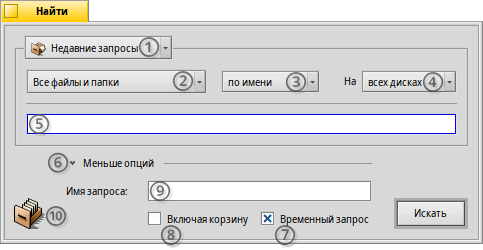
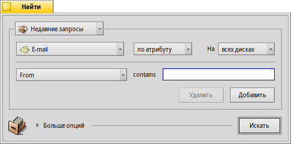
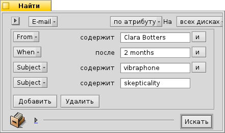
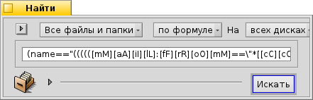
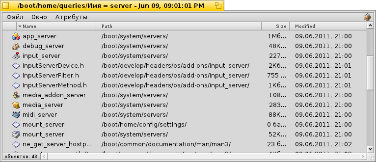

| Содержание |
|
Окно поиска Базовые запросы - "по имени" Расширенные запросы - "по атрибуту" Более продвинутые запросы - "по формуле" Окно результатов поиска Шаблоны запросов |
Запросы
Запрос - это поиск файлов на основе атрибутов, который может быть выполнен как в Tracker, так и в Терминале. Запросы за последние семь дней хранятся по следующему адресу: /boot/home/queries/, по прошествии этого срока они удаляются. Следует отметить, что они не являются статичными списками результатов поиска. При открытии запроса будет запущен новый поиск.
Ещё более удобный способ заключается в использовании выпадающих подменю - просто щелкните правой кнопкой мыши по файлу запроса.
 Окно поиска
Окно поиска
Для того. чтобы произвести запрос, можно воспользоваться пуктом меню в Deskbar, либо в любом окне Tracker или на Рабочем столе, при помощи сочетания клавиш ALT+F. Окно поиска выглядит следующим образом:
Выбрать предыдущие или сохраненные запросы, либо сохранить текущий в виде шаблона запроса.
Выбрать какого типа файлы следует искать в выпадающем меню .
- Определить тип поиска:
- - базовый поиск по имени файла
- - расширенный поиск - вы можете указать условия поиска по одному или нескольким атрибутам
- - еще более продвинутый поиск, вы можете сформировать сложносоставной запрос
Выбрать на каких разделах произвести поиск.
Ввести условия поиска.
Показать/спрятать дополнительные опции.
Уберите галочку напротив - , если вы не хотите, чтоб запрос удалился через 7 дней.
Отметьте галочкой - , если хотите, чтоб поиск был произведен и в корзине тоже.
Опционально - можете ввести название запроса, если хотите его сохранить.
Для того, чтобы сохранить запрос, можете просто перенести иконку в любую папку или рабочий стол.
Базовые запросы - "по имени"
Если вы хотите просто найти все файлы на ваших смонтированных разделах, то просто выберите тип поиска , введите искомое слово в поле ввода и нажмите клавишу ENTER.
Расширенные запросы - "по атрибуту"
Вы можете произвести расширенный запрос по указаным атрибутам конкретных типов файлов. Чтобы это работало, атрибуты должны быть проиндексированы.
Вам следует выбрать тип файла отличный от , например, и изменить тип поиска на .
Это добавляет всплывающее меню слева от текстового полня и кнопок и . Из меню можно выбрать атрибут, по которому будет произведен запрос. При помощи кнопок и вы можете добавить дополнительный атрибут или удалить ненужный. Эти атрибуты могут быть логически связаны операторами и/или.
Давайте произведем запрос по письмам для примера:
This is your Find window when you're looking for all emails Clara Oswald has sent to you in the last two months that had in the subject "sufflé" or "impossible".
As you see, searching through time-based attributes supports some useful phrases: besides for the "last 2 months", you could also use "today", "yesterday", "Monday" or "last Monday" (which would be the Monday last week), or "last 2 minutes/hours/days/weeks".
A good way to cut down the number of search results.
Более продвинутые запросы - "по формуле"
Вводить формулу вручную сложно и непрактично.
Используйте запросы по атрибутам, которые находятся выше. Если у вас есть все атрибуты и установлены условия поиска, попробуйте переключиться на тип поиска и вы увидите, как запрос превратится в строку:
В более понятном виде:
(((((MAIL:from=="*[cC][lL][aA][rR][aA] [oO][sS][wW][aA][lL][dD]*")
&&(MAIL:when>=%2 months%))
&&(MAIL:subject=="*[sS][uU][fF][fF][lL][éÉ]*"))
||(MAIL:subject=="*[iI][mM][pP][oO][sS][sS][iI][bB][lL][eE]*"))
&&(BEOS:TYPE=="text/x-email"))
Что это даёт?
Вы можете скопировать и вставить строку в письмо, форум или IRC для того чтобы пользовались другие или для отладки.
You can use this method to construct a query in mode and then switch to mode, to comfortably generate a search string. Enclosed in single quotes, that string can then be used with the query command in the Terminal.
Вы можете составить свой запрос наиболее точно, вставив круглые скобки там, где это необходимо, задав его частично зависящим от регистра или применяя логические комбинации отрицания, например: "==" (НЕ), "!=" (И). Для этого требуются лишь минимальные знания регулярных выражений и некоторые познания структуры скриптов.
Окно результатов поиска
После того как вы запустите поиск, окно поиска заменится окном результатов поиска. Вот пример результатов поиска по слову "server":
Некоторые вещи, которые стоит отметить:
Вы можете открыть месторасположение файла или папки, дважды щелкнув по атрибуту адреса.
При помощи пункта меню или сочетания клавиш ALT G вы сможете вернуться к окну поиска для того, чтобы изменить критерии запроса.
Запрос выполняется в реальном времени, т. е. если файл, который соответствует критериям, будет создан или удален, то это будет отображено в окне результатов поиска в реальном времени.
Вы можете назначить удобную схему размещения атрибутов для результатов запроса конкретного типа файла. Откройте папку, содержащую файлы необходимого типа, для которых вы хотели бы создать шаблон и упорядочите атрибуты так, как хотели бы видеть выдаваемые результаты запроса. Скопируйте эту схему черз меню .
Откройте /boot/home/config/settings/Tracker/DefaultQueryTemplates, создайте новую папку с названием группа/тип файла, заменив косую черту подчеркиванием, например: "audio_x-mp3", откройте её и вставьте скопированную схему через меню .
Шаблоны запросов
Если дважды кликнуть по сохраненному запросу, то сразу начнётся поиск файлов и откроется окно с его результатами. Однако вы не сможете задать при этом точные параметры поиска, но можете его использовать в качестве отправной точки для настройки простого шаблона.
С помощью пунка меню (см. (1) на скриншоте сверху) или перетащив куда-нибудь иконку (10) правой кнопкой мыши, вы можете создать именно такой шаблон. Двойной клик по нему откроет не окно с результатами запроса, а панель поиска, дав вам возможность быстро изменить строку поиска или добавить либо удалить атрибуты.
Где бы вы не решили сохранить шаблоны, они будут перечислены в меню недавних запросов панели поиска.